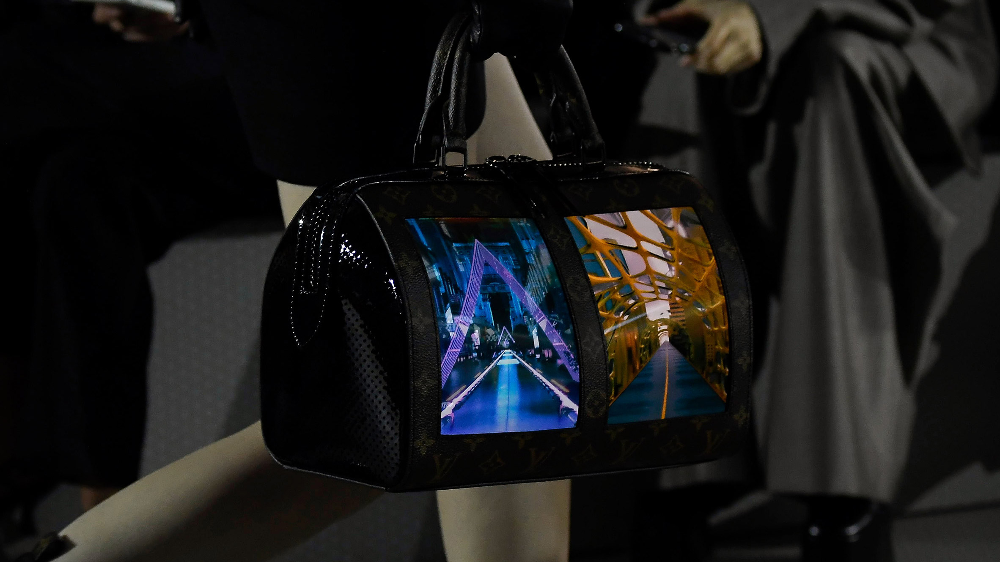
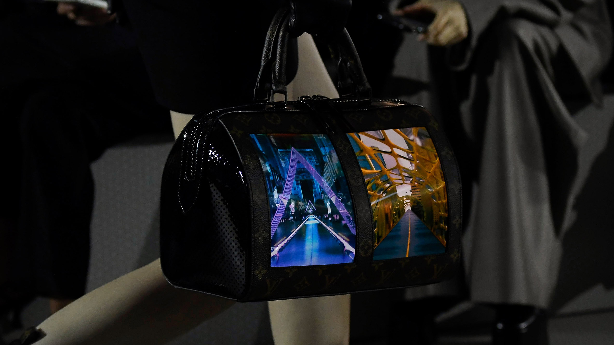
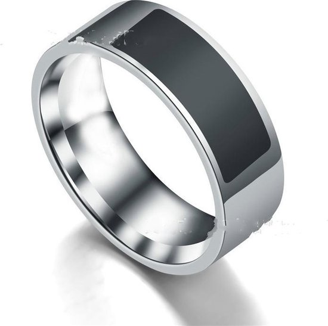
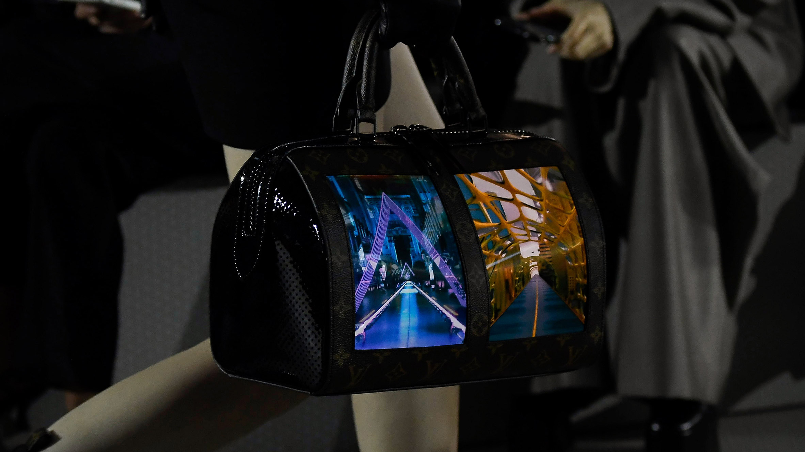
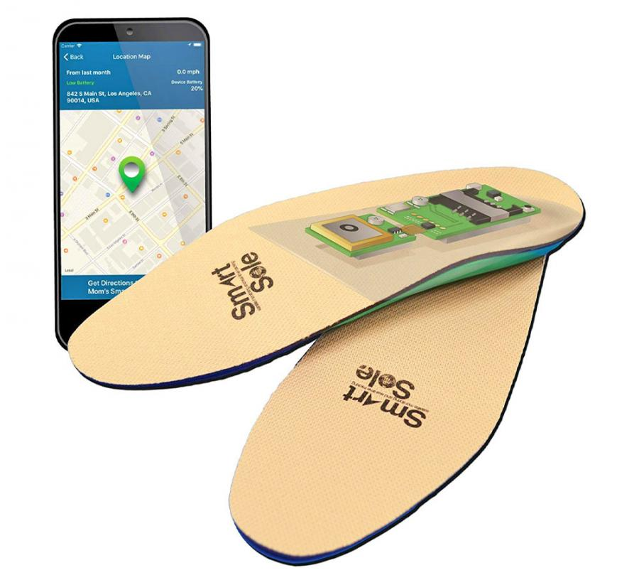

Link Kimbab
Link Louis Vuitton

Link Kimbab
Link Louis Vuitton
Voordat ik aan challenge 2: Wearables ben begonnen, heb ik natuurlijk eerst onderzoek uitgevoerd. Natuurlijk weet ik wat wearables zijn, maar net als bij de Ar & VR challenge zullen er vast indrukwekkende projecten staan en/of wearables waar ik nooit aan zou denken. Hieronder heb ik een aantal leuke en interessante wearable projecten, waar de Arduino gebruikt is.
Dit project is gemaakt door McLear ltd. Zij zijn een groot voorstander voor open source approaches om problemen op te lossen. Zij gelovend dat dit de beste manier is om resultaat te krijgen voor blijkbaar de mensheid. Dit project vind ik erg leuk idee, aangezien er steeds minder wordt betaald met een bankpas. Ik zie heel vaak dat vooral jongeren via hun mobiele telefoon betalen d.m.v. NFC. Dit kan de ring ook. Je kan hiermee dus ipv je mobieltje te gebruiken, wat onhandig groot is, juist een simpel fashion accessoires gebruiken. De ring is meestal gemaakt van titanium en bevat een NFC chip. Het kan een stap richting de toekomst zijn. Misschien dat ze in de nabije toekomst, chips in je handen zullen plaatsen. Dit zie je vaak in futeristische films voorkomen. Ik zou dit nooit dragen als ik eerlijk bent, maar ik zie er wel wat in. Het is namelijk veel compacter en simpelweg handiger dan bijvoorbeeld je mobiel. Misschien zal de volgende stap fashionable stickers zijn met NFC tags, dat ook daadwerkelijk blijft plakken op je lichaam.  Link
Dit project is gemaakt door Natthakit KIMBAB Kang. Bij dit project is er gebruik gemaakt van een Arduino Uno, een Genuine UNO en heel veel lampen. Dit is naar mijn mening de leukste en orgineelste wearable dat ik ook gezien heb. Ik zou niet heel gemakkelijk op het concept komen dat een tas ook als een wearable gezien kan worden. Dit heeft zeker mijn kijk op wearables verbreedt.
Wat ik erg leuk aan het project vind, is dat het een lichtgevende tas is. Doordat de lampjes steeds aan en uit gaan, worden er ook leuke mini animaties gemaakt. Dit is erg gaaf. Je kan namelijk in de tas boodschappen of producten die je hebt gekocht plaatsen. En niet in zomaar een tas plaatsen, maar juist in een moderne en vrolijke tas. Ik vind dit erg gaaf, want ik had nooit gedacht aan een tas dat licht geeft en patroontjes animeerd. Dit zou vooral in de avond erg mooi kunnen zijn. Dit zal het 's avonds erg mooi en vrolijk maken.
Een soortgelijke versie is de tassenlijn van Louis Vuitton die tijdens de Cruise 2020 show heeft laten zien. Een Louis Vuitton tas met ingebouwde OLED schermen.

Link Kimbab
Link Louis Vuitton
De GPS Smartsole is gemaakt door GTX corp. De smartsole stuurt elke 5 of 10 minuten data naar de GTX Corp Monitoring. Dit is bedoelt om de locatie op te halen van de gebruiker, om uiteindelijk de geozone meldingen via de email of SMS. Het houdt eigenlijk de route bij en of er natuurramp kan voorkomen in het gebied waar je bent of was. Ik vind dit een interessant project, omdat het meerdere mogelijkheden heeft dan alleen de route vaststellen of natuurrampen etc. Het kan namelijk ook jouw eigen locatie tracen bij een ongeval! Vooral met de movement dat laatst erg actief werd, kan dit een goede hulpmiddel zijn. De #MeToo movementen ging over vrouwen die nu durven te vertellen wat er is gebeurt. Dit is natuurlijk lastig te bewijzen en met een trackingsole kan dit! Ook als er iemand vermist word, kan de huidige of locatie van de schoenen, sneller getraceerd worden. Dit is erg handig aangezien de politie zo snel mogelijk aanwijzingen nodig heeft. Hoe sneller de clues, hoe eerder iemand gevonden kan worden!  Link
Voor challenge 2 wearables heb ik een soort afstandshoofddeksel gemaakt. Voor de hoofddeksel heb ik gebruik gemaakt van een Unox hoedje, omdat ik geen andere hoedje/pet hebt. De afstand sensor is een vervolg van tinkering 1. Tijdens deze verandering heb ik nagedacht hoe ik dit compacter kon maken en ook wat realistischer kon maken. De drie LED lampjes kan namelijk in de weg zitten. Hierdoor heb ik bedacht om een lamp te gebruiken en deze lampjes steeds sneller te laten knipperen als iemand te dicht bij komt. En als dit het geval is en iemand komt echt te dicht bij, de lampje rood zal schijnen. Ook heb ik de piezo speaker zo op af gestemd dat het steeds sneller zal piepen als iemand te dicht bij komt.
Ik denk dat wearables gedeeltelijk wel de toekomst zullen worden. Je merkt namelijk dat steeds meer mensen een smartwatch beginnen te dragen, terwijl dat eerst niet zo was. Het vervangt de normale horloge ook qua handigheid, maar ook in stijl. Je merkt namelijk dat ook mensen in pak, een smartwatch gebruiken als stijl. Verder zijn er al ontwikkelingen gaande voor smartglasses, schoenen en kunnnen chips in de menselijke lichaam, ook als wearable gezien worden. Echter, betwijfel ik wel of dit erg handig is. Smartglasses kan bijvoorbeeld gevaarlijk worden in het verkeer. Als iemand dit hackt of er een vreemd pop-up komt tijdens het rijden, kan dit nare gevolgen hebben. Op mijn uiteindelijke product ben ik eigenlijk wel tevreden. Ik heb na teveel tijd te hebben besteedt, nagedacht en gegoogled toch wel iets kunnen maken. Ik had eerlijk gezegd geen motivatie om deze challenge te maken. De product zelf kan natuurlijk wel wat realistischer gemaakt worden, door de kabels door de hoofddeksel te laten lopen en dit ook vast te plakken aan de hoofddeksel zelf. Dit is echter iets als zoiets op de markt gebracht word. Verder had ik natuurlijk ook wat meer featerings in de laatste versie kunnen toevoegen, maar ik was echt inspiratieloos en motivatieloos voor deze challenge. Bij toekomstige schoolopdrachten zal ik zeker meer mijn best doen. Mijn ervaring met Arduino is erg leuk. Ik merk dat ik het maken van de opdrachten in de werkcolleges, echt leuk vind. Arduino werkt ook best fijn en is ook niet al te moeilijk. In de eerste instantie had ik echt heel veel moeite met het aansluiten van de onderdelen. Vooral als je bepaalde delen met elkaar combineerd. Uiteindelijk na veel proberen is dit mij toch goed gelukt. Arduino heeft ook een erg fijne voorbeelden. Ik ben erachter gekomen dat deze voorbeelden een echte 'life-saver' zijn tijdens het werken met de Arduino!